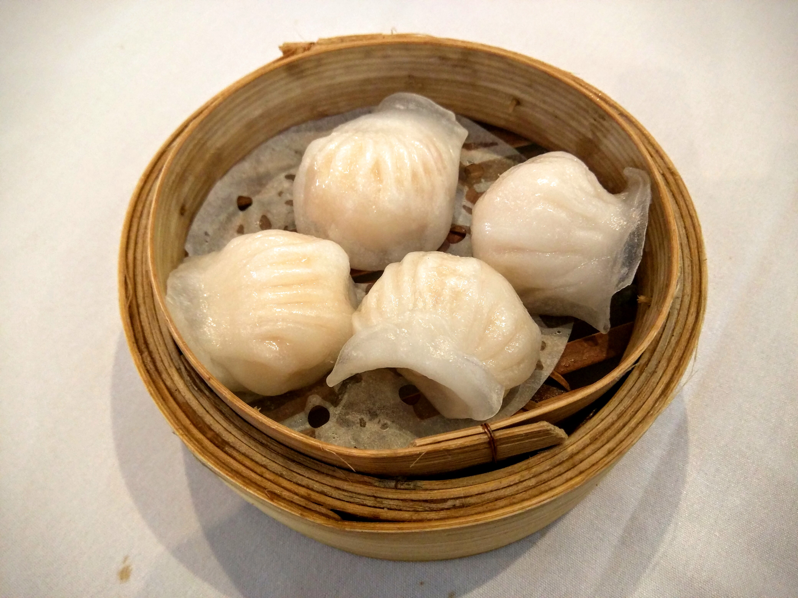

Top 3 Food in Guangzhou
Dim Sum – Shrimp Dumplings (Har Gow)

Introduction
Shrimp dumplings (har gow) are the star of Cantonese dim sum—small, steamed dumplings with translucent rice flour skins and juicy shrimp filling. They’re a must-order at any teahouse in Guangzhou, where locals enjoy them with a cup of jasmine tea. The perfect har gow has a thin, tender skin that doesn’t stick to your fingers, and a filling of fresh shrimp (chopped, not minced), bamboo shoots, and a touch of pork fat for richness. They’re steamed just long enough to cook the shrimp—so the filling is sweet, juicy, and not rubbery.
Taste
Skin: Translucent, tender, and slightly chewy—holds the filling without breaking.
Filling: Sweet, fresh shrimp with a crunch from bamboo shoots; the pork fat adds a subtle richness.
Overall: Light and flavorful—perfect for breakfast or brunch.
Price
Local Teahouses: 28–38 CNY/steamer (4–5 dumplings).
High-end Dim Sum Restaurants: 48–68 CNY/steamer (using premium shrimp).
Roast Goose

Introduction
Roast goose is a Cantonese classic—whole goose roasted until the skin is crispy and golden, and the meat is tender and juicy. In Guangzhou, the best roast goose is made with young geese (about 3kg), marinated in a sauce of soy sauce, honey, star anise, and cinnamon, then hung to dry before roasting. The roasting process (usually in a charcoal oven) crisps the skin while keeping the meat moist—locals say the skin is the best part. It’s often served with “hoisin sauce” (sweet bean sauce) and steamed rice, or chopped into a sandwich (roast goose bun).
Taste
Skin: Ultra-crispy, thin, and slightly sweet (from the honey marinade)—no fatty texture.
Meat: Tender, juicy, and flavorful— the marinade seeps into the meat, making it savory with a hint of spice.
Sauce: Hoisin sauce adds a sweet-savory kick that complements the goose.
Price
Local Roast Meat Shops: 68–88 CNY/kg (takeaway); 128–158 CNY for a half-goose (dine-in).
Famous Shops (e.g., Yat Lok): 88–108 CNY/kg (premium quality).
Double-Skin Milk (Shuang Pi Nai)

Introduction
Double-skin milk is a classic Cantonese dessert—silky, creamy, and slightly sweet, made with milk and egg whites. It gets its name from the two “skins” that form: the first skin is a layer of milk fat that rises to the top when milk is heated, and the second skin forms after the milk is mixed with egg whites and steamed. In Guangzhou, it’s often served plain or with toppings like red beans, taro balls, or mango. It’s light enough to eat after a heavy meal, and its creamy texture makes it a favorite among kids and adults alike.
Taste
Texture: Silky, smooth, and slightly jiggly—like a soft pudding, but creamier.
Flavor: Mildly sweet, with a rich milk taste—no artificial flavors.
Toppings: Red beans add a sweet, chewy contrast; mango adds a fresh, fruity note.
Price
Dessert Shops: 18–28 CNY/bowl (plain or with simple toppings).
High-end Dessert Bars: 38–58 CNY/bowl (with premium toppings like fresh mango or bird’s nest).